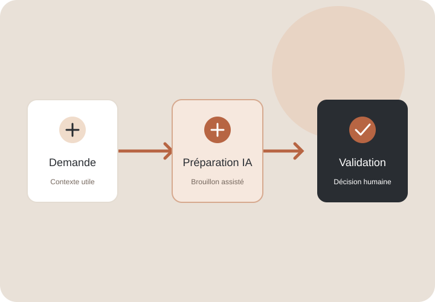
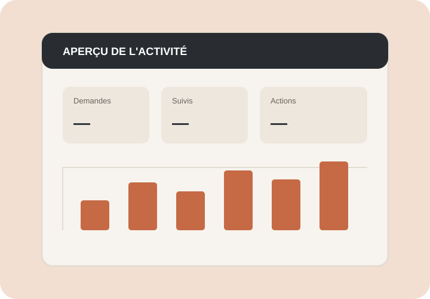

Un site web clair et professionnel
Présenter votre activité, vos services et vos informations essentielles avec un parcours simple, adapté au mobile.
Découvrir la création de sitesConseils · Création web · Solutions IA
J'accompagne les indépendants, artisans et petites entreprises dans la création de sites web et l'adoption d'usages utiles de l'intelligence artificielle.

Comment je peux vous aider
Partir de votre activité et de vos besoins réels pour choisir une solution compréhensible, proportionnée et évolutive.
Présenter votre activité, vos services et vos informations essentielles avec un parcours simple, adapté au mobile.
Découvrir la création de sitesIdentifier les tâches où l'IA peut assister votre travail, faciliter certaines opérations et préparer des réponses.
Explorer les usages de l'IAClarifier vos besoins, organiser vos outils et avancer étape par étape, sans ajouter de complexité inutile.
Échanger sur un besoinDémonstrations personnelles
Ces trois exemples sont des concepts fictifs réalisés à titre de démonstration. Ils ne correspondent pas à des missions client ni à des résultats obtenus.

Une page de présentation pour expliquer les prestations, rassurer les visiteurs et faciliter la prise de contact.

Un scénario illustratif pour organiser la réception, la qualification et le suivi des demandes.

Une maquette de tableau de bord destinée à illustrer le suivi d'indicateurs utiles à une petite entreprise.
Une méthode simple
Comprendre votre activité, vos contraintes et le résultat attendu.
Définir une solution réaliste, son périmètre et ses priorités.
Créer une première version utile et vérifier son fonctionnement.
Évaluer le résultat et ajuster selon les besoins réels.
À propos
Je développe mon activité autour de la conception web, des outils numériques et des usages concrets de l'IA. Mon approche privilégie la compréhension du besoin, la clarté des choix et des solutions adaptées à la réalité de chaque entreprise.
Les démonstrations présentées sur ce site sont des concepts personnels, pas des références clients.
Votre prochain pas
Décrivons votre situation et identifions une première amélioration utile, sans partir sur un projet inutilement complexe.
Présenter votre projet